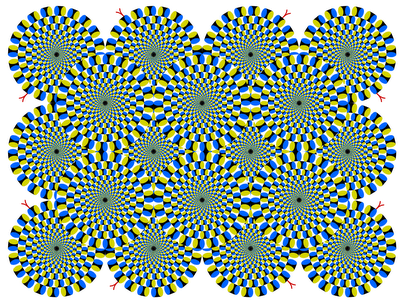
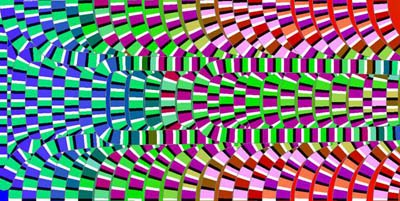

Earlier this week I found myself on a long-haul flight to the
SIGGRAPH
computer graphics conference in Los Angeles. To pass the time I decided
to catch up on some of the papers that are being presented here. But I
had to stop when it came to the mind-warping, travel-sickness-inducing
images that littered a paper by researchers from National Cheng Kung
University in Taiwan and the Chinese University of Hong Kong.
For the full effect click the image above to enlarge or
here.
Ming-Te Chi and colleagues have analysed a number of hand drawn examples of these 'self-animating images' drawn by
Akiyoshi Kitaoka. Even though the viewer knows they are static the images unnervingly seem to move anyway. Chi's team is trying to find out why.
They've
identified a number of important factors. The pictures appear to creep
because of the arrangement of colour bands in the small repeated
asymmetric patterns (dubbed RAPs). Certain combinations seem to give
the impression of it creeping in a particular direction, although that
effect is relatively weak. The illusion is strengthened if a ribbon of
RAPs that appears to flow to the right is placed next to one that
appears to flow to the left.
Most
impressively, Chi's team has worked out a way to predict which colour
combinations give the best illusions. By plotting the four colours used
in their images on a standard colour wheel they found a characteristic
pattern emerged: the four colours used should always be as different
from each other as is possible.
White couples best with black,
blue works well with yellow. With that discovery the researchers could
begin experimenting with a wider palette of colours than was previously
available to produce self-animating images. As a result they can make
far more sophisticated images.
For an example
check out this document (pdf) for a creeping rendition of Van Gogh's
Starry Night.
Fascinating work, but not good reading material when travelling.
Colin Barras, online technology reporterLabels: graphics
 Mark on August 15, 2008 12:46 PM
Mark on August 15, 2008 12:46 PM 


{kind=link}
{kind=link}
{kind=link}